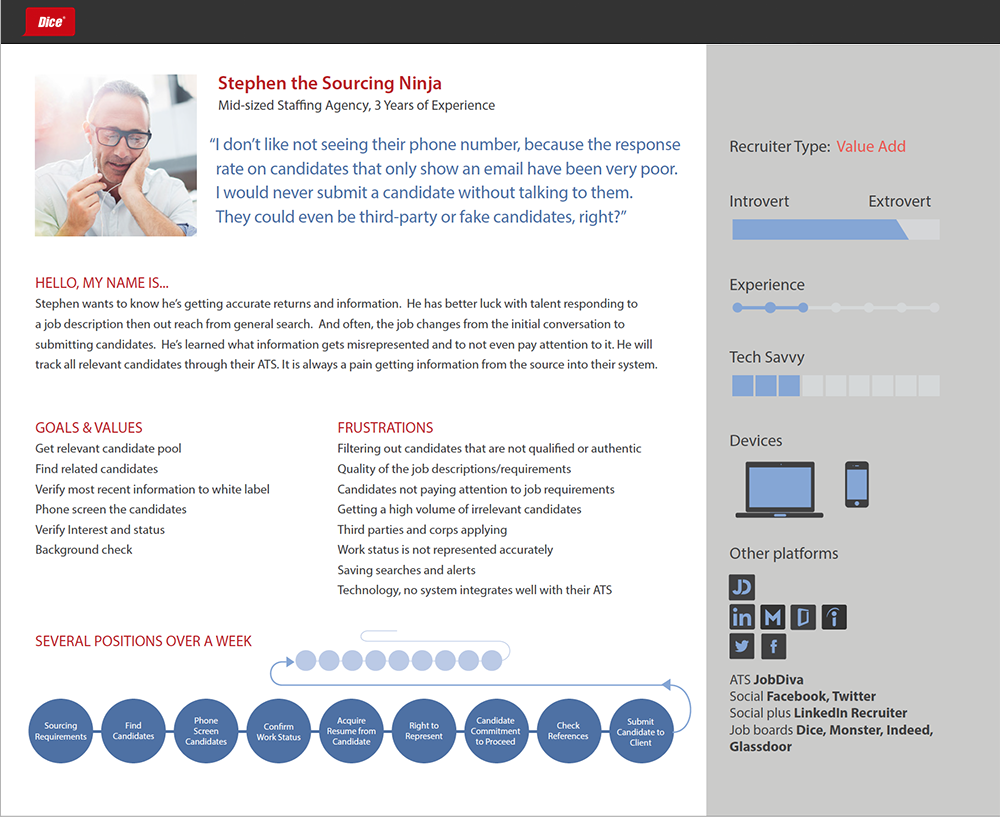

Dice, is a leading career site for technology professionals. The Employer experience had been overlooked for several years and in dire need of an overhaul, from lead generation to tools and workflows for hiring the right candidate.
From the front of the experience, this end-to-end effort involved creating an Employer site to show standardized Dice pricing, generate the Most Qualified Leads (MQLs) and capture them in Salesforce.
At the same time, auhtenticated feature improvements called for an iterative approach to keep customers coming back for improvements, without disrupting their work while providing more AI to work smarter.
To be the trusted partner and an indispensable solution for all tech hiring needs. Empower clients with tools, information and community to optimize engagement with quality candidates more effectively.
With the creation of Dice.com/hiring we increased our Net Promoter Score (NPS) by 15 points and converted more Most Qualified Leads (MQLs) to close. With reduced budgets due to COVID-19 it has become vital to capture qualified leads, nurture leads, convert leads, and connect them quickly to Sales.
Recruiters could be more efficient with one workflow for posting and sourcing. The experience integrated its AI-powered TalentSearch solution into its job management as part of a total redesign of the interface, providing tech employers the fastest way to a candidate shortlist. Improvements to the employer experience also included significant enhancements to job posting and application management, helping employers easily manage the tech hiring process from start to finish, all from a single portal.
"Our latest TalentSearch integration will aid tech employers in quickly identifying a shortlist of talent by providing posting and sourcing in one workflow, for tech companies and recruiters who need a more efficient way to hire technologists."
— Christian Dwyer, Chief Product Officer for Dice

DDice clients can access the largest database of unique, skilled and engaged technologists. Leveraging tech-specific predictive analytics and AI-matching capabilities, recruiters easily find the ideal candidate for their opportunity. Dice's TalentSearch also provides direct ATS integrations, which support recruiters in their existing workflow.
Unifying the candidate, advanced and IntelliSearch™ search experiences, increased IntelliSearch™ use by 200% in 2021. Additionally, we experienced:
When a client posts a job, they can easily see Detailed Job Views and Applicants showing how many times their jobs were viewed and applied to on Dice. IntelliSearch™ instantly returns candidates who are relevant to that job. The new TalentSearch column shows the number of matches to each job. Clients can click directly to those matches. Clients can also save the search that results from the instant matches, enabling them to receive relevant candidates directly to their inbox.

Applications Management offers a streamlined yet powerful portal that allows clients to smoothly transition from posting to hiring.
Clients can post and source in one efficient, seamless workflow. Dice's TalentSearch and job management integration allows employers to efficiently post and update jobs; attract skilled, actively searching and responsive tech talent; and manage applications, all from a single interface. 65%+ of Promoters give a high rating due to ease of use.
TalentSearch, powered by Dice's proprietary IntelliSearch™, instantly delivers a curated list of qualified candidates for every posted job. Integrated into Dice's job management interface, recruiters and hiring managers can post jobs and source relevant talent. 83% agreed/strongly agreed that site functionality is user friendly, intuitive and meets their needs.
Recruiters have visibility into which jobs are getting the most interaction from candidates for every job posted. This helps recruiters understand which jobs are performing well and which ones need to be optimized for better engagement, while also managing future needs, reducing time-to-hire and increasing ROI.